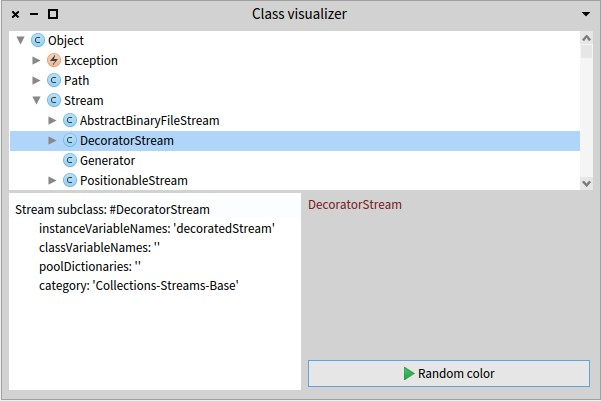

8 UI testing
Developers often think that testing UI is difficult. This is true that fully testing the placement and layout of widgets can be tedious. However, testing the logic of an application and in particular the interaction logic is possible and this is what we will show in this chapter. We show that testing Spec application is simple and effective.
8.1 Testing Spec
Tests are key to ensuring that everything works correctly. In addition, they free us from the fear to break something without being warned about it. Tests support refactorings. While such facts are general and applicable to many domains, they are also true for user interfaces.
Spec architecture
Spec is based on an architecture with three different layers as shown in Figure 8.1:
- Presenters: Presenters defined the interaction logic and manipulate domain objects. They access back-end widgets but via an API that is specified by Adapters.
- Adapters: Adapters are objects exposing low-level back-end widgets. They are a bridge between presenters and low-level widgets.
- Back-end widgets. Back-end widgets are plain widgets that can be used without Spec.
Three roles and concerns
To help you understand the different possibilities of testing that you can engage in, we identify the following roles and their related concerns.
- Spec Users. Spec users are developers that build a new application. They define the logic of the application by assembling together presenters and domain objects.
- Spec Developers. Spec developers are more concerned with the development of new Spec presenters and their links with the adapter.
- Widget Developers. Widget developers are concerned about the logic and working of a given widget in a given back-end.
We will focus on the first role.
For the reader interested in the second role, the class SpAbstractBackendForTest is a good starting place.
8.2 Spec user perspective
As a Spec user, you should consider that the back-ends are working and your responsibility is to test the logic of the user interface components. We should make sure that when the model changes, the user interface components reflect the changes. Inversely when the user interface components change, we should ensure that the model is updated.
8.3 Example
We will test a simple spec application. The model for this application can be any class. It shows in a tree presenter all the subclasses of the model. Also, has a text presenter that shows the definition string for the selected class. Finally, has a string morph and a button. When the button is pressed, the color of the morph changes randomly.

Spec user test 1: correct initialization
The tool will be instantiated with a model.
In this case, we will use Object because it is the root of almost all classes.
So, when we instantiate the spec application of the figure above, all the sub-presenters of the application must show the data of the model.
testInitialization
| model |
model := String.
spApplication := ClassVisualizerPresenter on: model.
self assert: spApplication model equals: model.
self
assert: spApplication textPresenter text
equals: model classDefinitions first definitionString.
self
assert: spApplication morphPresenter morph contents
equals: model name8.4 Spec user test 2: Tree selection
When selecting a new item in the tree presenter, the text presenter and the morph should change.
The tree presenter shows a tree of classes. When a class of the tree presenter is selected, the text presenter should change according to the definition of the newly selected class. The morph must change as well.
testSelectItemOnTreePresenter
"As we have initialized the tree with Object as its roots. The class OrderedCollection is a subclass of Object. We would simulate that a user selected OrderedCollection from the tree presenter."
spApplication := ClassVisualizerPresenter on: Object.
spApplication hierarchyTreePresenter selectItem: OrderedCollection.
self
assert: spApplication hierarchyTreePresenter selectedItem
equals: OrderedCollection.
self
assert: spApplication textPresenter text
equals: OrderedCollection classDefinitions first definitionString.
self
assert: spApplication morphPresenter morph contents
equals: OrderedCollection name8.5 Spec user test 3: triggering the button action
The action of the color button changes the color of the morph randomly. When the button is clicked the morph must change its color.
testButtonChangesMorph
| previousColor |
spApplication := ClassVisualizerPresenter on: Object.
previousColor := spApplication morphPresenter morph color.
spApplication colorButton click.
self
deny: spApplication morphPresenter morph color
equals: previousColor8.6 Spec user test 4: Not editable text presenter
For this application, we only want that the text presenter shows the class definition. We do not want the user to be able to edit it.
testTextPresenterIsNotEditable
spApplication := ClassVisualizerPresenter on: Object.
self deny: spApplication textPresenter isEditable8.7 Spec user test 5: the window is built correctly
Here, we will test that the title and the initial extent of the window are correct. Also, we will test if the window was built correctly.
testInitializeWindow
| window |
spApplication := ClassVisualizerPresenter on: Object.
window := spApplication openWithSpec.
self assert: window isBuilt.
self assert: window title equals: ClassVisualizerPresenter title.
self assert: window initialExtent equals: 600 @ 400.
window close8.8 Known limitations and conclusion
We show in this chapter that you can take advantage of Spec to define tests that will help you to evolve the visual part of your application.
Currently, Spec does not offer a way to script and control popup windows. It is not possible to script a button that opens a dialog for a value. Future versions of Spec20 should cover this missing feature.